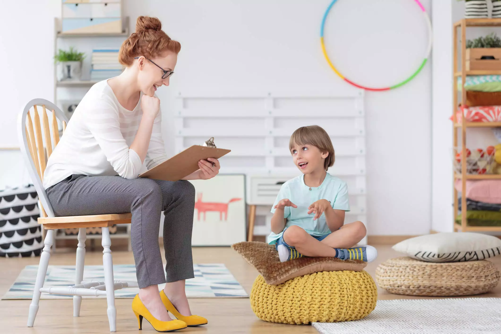

Terapia individual
A terapia individual é um processo colaborativo entre o psicólogo(a) e o paciente, onde são explorados temas relacionados ao bem-estar emocional e mental. O objetivo é ajudar o paciente a lidar com sentimentos difíceis, desenvolver habilidades de enfrentamento, e promover mudanças positivas em sua vida.
Terapia com casais
A terapia com casais é voltada para ajudar os casais a desenvolver habilidades de comunicação, resolver conflitos e fortalecer seu relacionamento. O objetivo é criar um ambiente seguro e confidencial onde os casais possam explorar suas necessidades e expectativas, e trabalhar juntos para alcançar seus objetivos.
Atendimento a crianças
O atendimento psicológico para crianças é voltado para ajudá-las a desenvolver habilidades emocionais e sociais, lidar com sentimentos difíceis, e superar desafios em suas vidas. O objetivo é fornecer um ambiente seguro e acolhedor onde as crianças possam se expressar e desenvolver habilidades para lidar com as dificuldades que enfrentam.
Terapia perinatal
A terapia perinatal é voltada para mulheres que estão grávidas ou que acabaram de ter um filho. O objetivo é ajudá-las a lidar com as mudanças emocionais e físicas que ocorrem durante a gravidez e o pós-parto, e promover a saúde mental e emocional da mãe e do bebê.